GROUP 9 | OFF-GRID VEHICLE TRACKER | TEXAS TECH ECE CAPSTONE
WHAT BROKE, AND WHAT IT TAUGHT US — presentation of 4 November 2026, 21 sheets
This guide goes with Group9_Presentation.pptx (REV D). For every sheet it gives: a picture of the sheet, what is on it, the explanation in depth (the part a presenter has to understand, not just read), a suggested spoken opening, and the questions the audience is most likely to ask with the honest answers. The presenter named on the sheet should read that sheet's page before the talk; the technical sheets (4, 10, 13 to 17, 19, 21) belong to Deo.
Speaking order and load
| Presenter | Sheets | Minutes |
|---|---|---|
| Josiah | 2, 5, 7 | about 4 |
| Cannon | 3, 8, 12, 20 | about 4 |
| Victor | 6, 9, 11, 18 | about 5 |
| Deo | 1 (open), 4, 10, 13, 14, 15, 16, 17, 19, 21 | about 12 |
Three sentences that carry the whole deck
Team: Deo Grace Mwala, Josiah Horn, Victor Okwonna, Cannon Thomas. Sponsor: Dr. Richard Gale. Hypothesis for Part II from a Qualcomm engineer, October 2026; experiment design, scripts and analysis drafted with Claude (Anthropic) as an AI assistant; every measurement run and checked by the team. Records: docs/src/flash_forensics.
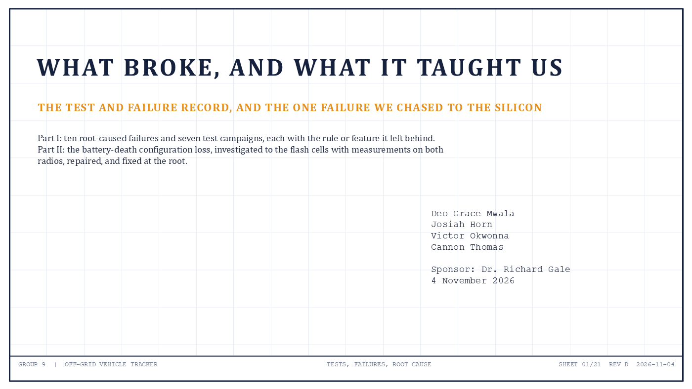
The title, the one-line summary of both parts, and the team. Part I is ten root-caused failures and seven test campaigns; Part II is the single failure chased to the flash cells.
The framing matters more than it looks. A failure deck can sound like a confession; this one is a verification record. The word to use is signature: every failure in the deck was reproduced or root-caused and written down in a form a stranger can recognise. That is what makes the system honest, and it is what turned a cancelled field test into the most rigorous piece of work in the project.
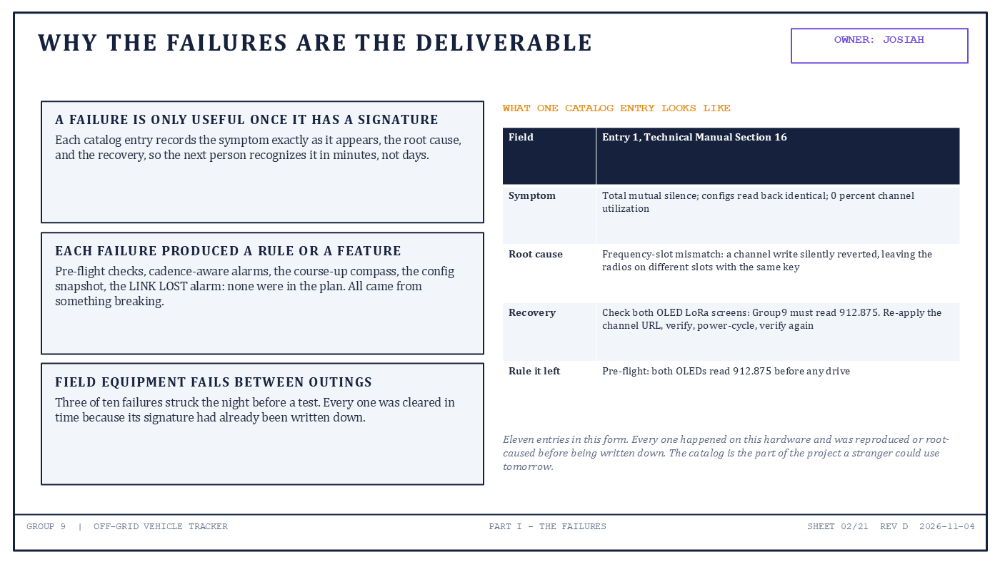
Three short claims on the left; on the right, a real entry from the failure catalog (Technical Manual, Section 16) laid out field by field: symptom, root cause, recovery, and the rule it left.
The catalog is a table in Section 16 of the Technical Manual with eleven entries. Each has four columns: the symptom written exactly as it appears to someone who does not know the cause ("total mutual silence; configs read back identical; 0 percent channel utilization"), the root cause, the recovery as concrete steps, and the rule or feature that came out of it. The entry shown is number 1, the silent frequency revert, which is also failure 7 on sheet 6.
The value of the catalog is time-to-diagnosis. Three of the ten failures happened the night before a test; every one was cleared in time because the signature had already been written down. That is the argument of the sheet: a failure that was merely survived will happen again; a failure with a signature is a test case.
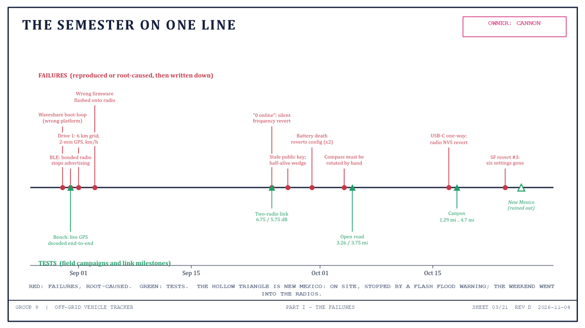
A timeline from late August to late October. Red dots above the line are failures; green triangles below are tests. The hollow triangle at the end is New Mexico: the team was on site and a flash flood warning stopped the drive.
Two patterns to point at. First, failures cluster right before tests, because preparing for a drive is when the equipment gets exercised. Second, the same villain returns: battery death reverting the configuration appears on 30 September (both radios), 17 October (SF) and 24 October (SF). That repetition is what justified spending the rained-out weekend on Part II instead of waiting for the next drive.
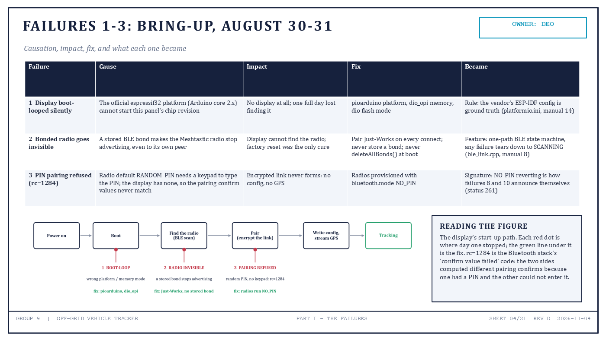
A five-column table (failure, cause, impact, fix, what it became) for the three day-one failures, and a figure of the display's start-up path showing where each one stopped it.
1. Boot-loop. The official espressif32 PlatformIO platform ships Arduino core 2.x, which cannot start the chip revision on the Waveshare panel. The fix was the pioarduino platform with dio_opi memory mode and dio flash mode, which is what the vendor's own ESP-IDF configuration uses. Rule: the vendor's IDF config is ground truth, not the vendor's Arduino screenshot.
2. Bonded radio goes invisible. If a BLE bond is stored, the Meshtastic radio stops general advertising, so nothing can find it, including the display that bonded to it. The fix is to pair Just-Works on every connection (still encrypted, no stored bond) and never call deleteAllBonds() at boot. It produced the one-path BLE state machine: any failure tears down to SCANNING and starts over.
3. PIN pairing refused, rc=1284. The radio shipped in RANDOM_PIN mode: it shows a six-digit PIN and expects the other side to type it. The display has no keypad. In BLE pairing each side computes a "confirm value" from the PIN and random numbers; with different PINs the values do not match and the stack reports 1284, which in NimBLE is 0x500 (Security Manager error on our side) + 4 ("confirm value failed"). Fix: provision the radios with bluetooth.mode NO_PIN. This matters later: NO_PIN is a stored setting, so when a radio's configuration reverts, the display log shows "status 261, insufficient authentication", the signature of failures 8 and 10.
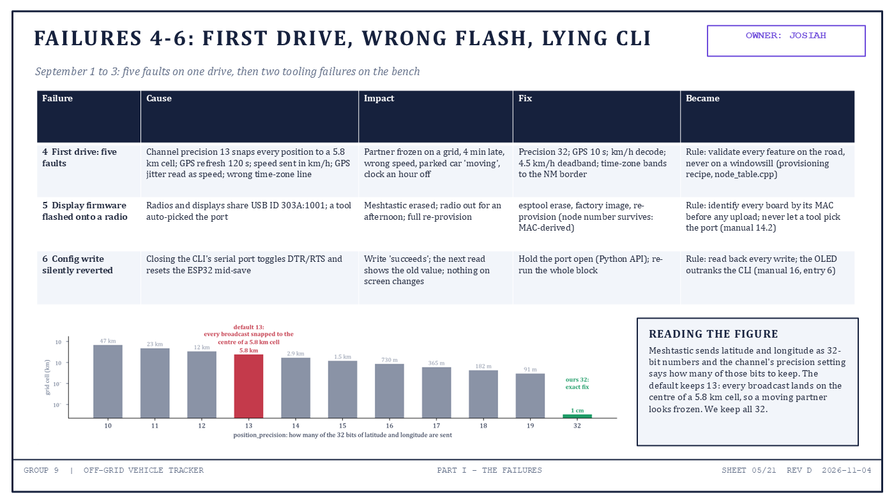
The five faults found on the first drive, the wrong-board flash, and the config write that silently reverted; under it, a chart of how big a grid cell each precision setting produces.
Precision 13. Meshtastic sends latitude and longitude as 32-bit integers in units of 1e-7 degree. A channel's position_precision says how many of the 32 bits are kept; the rest are zeroed and the position is placed at the centre of the resulting cell. The private-channel default is 13 bits, so the cell is 2^(32-13) × 1e-7 = 0.0524 degree, which is 5.8 km north-south (about 4.9 km east-west at our latitude). A moving partner therefore appeared frozen until it crossed into the next cell. Precision 32 keeps everything: about 1 cm.
GPS jitter. A parked receiver's fix wanders a few metres between readings (satellite geometry, atmosphere, reflections). The receiver converts that wander into a speed, so a parked car reads 1 to 3 mph. The node table ignores any speed under 4.5 km/h. The other three faults: the GPS refresh default of 120 s made positions up to two minutes stale; speed is sent in km/h on the wire, not m/s; and the time zone boundary had to be carried to the New Mexico border.
Failures 5 and 6 are tooling. Radios and displays share the USB ID 303A:1001, so a tool that auto-picks a port can flash the wrong board; it erased Meshtastic from a radio for an afternoon. Rule: identify every board by its MAC before any upload. And closing the CLI's serial port toggles DTR/RTS, which resets the ESP32 in the middle of a save, so the write "succeeds" and the next read shows the old value. Rule: read back every write, and the radio's own screen outranks the CLI.
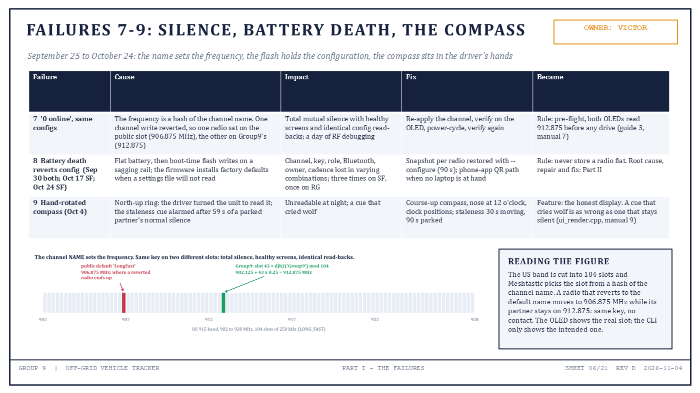
The silent frequency revert, the three battery-death incidents summarised in one row, and the hand-rotated compass; under it, the US band drawn as 104 slots with the public default and the Group9 slot marked.
The name is the frequency. The US 915 band runs 902 to 928 MHz and the LONG_FAST preset divides it into 104 slots of 250 kHz. Meshtastic chooses the slot by hashing the channel name: djb2("Group9") mod 104 = 43, and 902.125 + 43 × 0.25 = 912.875 MHz. A radio whose channel reverts to the default name moves to 906.875 MHz. Same key, different slot: nothing is heard, both screens look healthy, and the CLI reads back the intended configuration because it reports what was written, not what is radiating. The OLED frequency line is the only honest instrument, which is why the pre-flight is "both screens read 912.875".
Battery death. 30 September both radios (RG lost channels, SF lost everything), 17 October SF, 24 October SF. Losses were partial and different each time. Mitigations in October: pre-flight, a configuration snapshot per radio restored with --configure in 90 s, a phone-app QR path when no laptop is at hand, and never storing a radio flat. The root cause is Part II; do not pre-empt it here.
The compass. A north-up ring at night made the driver turn the unit to read it, at which point nothing on it could be read. Course-up (nose at 12 o'clock, directions as clock positions) fixed that, and the staleness cue was made cadence-aware (30 s moving, 90 s parked) because it was crying wolf after 59 s of a parked partner's normal silence.
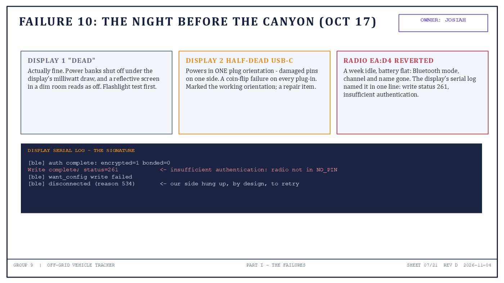
Three independent faults in one evening, and the display's serial log that named the third one in a single line.
Display 1 looked dead: power banks shut off under a milliwatt load, and a reflective screen in a dim room reads as off. Flashlight test first. Display 2 powers in one USB-C orientation only, damaged pins on one side; the working orientation is marked and it is a repair item. Radio EA:D4 (SF) had been idle a week with a flat battery; its Bluetooth mode, channel and name were gone. The signature is the log excerpt: pairing completes encrypted but not bonded, then a write returns status 261 (insufficient authentication, the radio is no longer in NO_PIN), then our side disconnects by design to retry. Forty minutes for all three, because each had a signature; the test ran the next morning.
Seven campaigns in a table and the range in four geometries as a bar chart.
The chart is the honest envelope: 0.5 mi in town, 1.29 mi in canyon folds, 3.75 mi car-to-car on flat road, 4.7 mi with one antenna on a canyon rim. Terrain and antenna height set the range, not the hardware. The canyon result is the subtle one: behind rock the link is intermittent at any distance, stale from 1.29 mi yet a packet landed at 4.28 mi through a gap, and a seven-minute outage healed with one packet and no operator action. The New Mexico row is the open-road maximum with roof-top antennas, the one number still missing; the team was on site on 25 October and a National Weather Service flash flood warning stopped the drive. It is rescheduled for the next clear weekend.
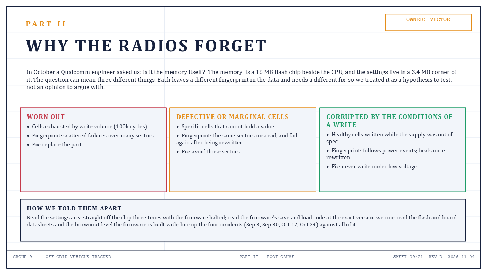
The question a Qualcomm engineer put to the team, and its three possible meanings, each with the fingerprint it would leave in data and the fix it would require.
"The memory" is a 16 MB flash chip beside the CPU; the settings live in a 3.4 MB corner of it. "The memory itself is at fault" could mean three different things. Worn out: cells exhausted by write volume (100,000 erase cycles); it would look like scattered damage across many sectors and the fix is a new part. Defective cells: fixed bad spots that stay bad even after being rewritten; the fix is to avoid them. Written under bad conditions: healthy cells left half-written because the supply sagged during a write; fixed bad spots that heal once rewritten; the fix is never to write under low voltage. The three are distinguishable, so the suggestion was treated as a hypothesis to test rather than an opinion to argue with. The bottom card is the method in one sentence: read the chip with the firmware halted, read the firmware source at the exact version we run, read the datasheets, and line up the four incidents.
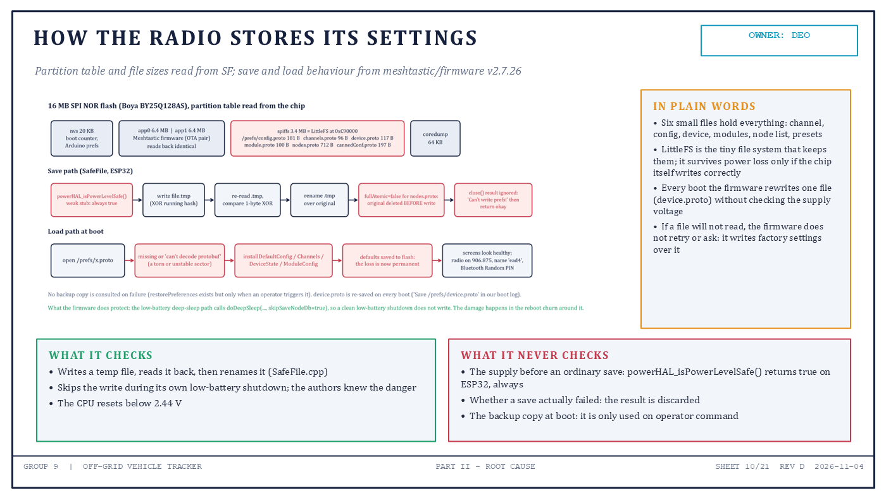
The flash partition table read from SF, the save path and the load path of the firmware with the weak points in red, a plain-words card, and what the firmware checks versus what it never checks.
Six protobuf files (config, channels, device, module, nodes, cannedConf) live under /prefs in a 3.4 MB LittleFS partition at 0xC90000. LittleFS is a small file system designed for microcontrollers to survive power loss: it writes new data before releasing old, and keeps its directory in pairs of blocks. That protection assumes the chip stores what it was told; it cannot help if the chip itself was out of specification during the write.
The save path (SafeFile.cpp) writes a temporary file, reads it back with a one-byte XOR check, then renames over the original. Two exceptions: nodes.proto is written non-atomically (the original is deleted first), and the result of close() is discarded, so a failed save logs "Can't write prefs!" and returns okay. The gate every save passes through, powerHAL_isPowerLevelSafe(), is a weak default that returns true; no ESP32 override exists in src/platform/esp32. The boot log shows device.proto re-saved on every boot.
The load path (NodeDB.cpp): open the file; if it is missing or will not decode, call installDefaultConfig() (or Channels, DeviceState, ModuleConfig), then save the defaults. No retry, and the backup copy is only consulted when an operator runs restorePreferences. So one unreadable file is a permanent, silent factory reset. The one protection that exists: the low-battery deep sleep calls doDeepSleep(skipSaveNodeDb=true), so a clean low-battery shutdown does not write. The damage happens in the reboot churn around it, not in the shutdown itself.
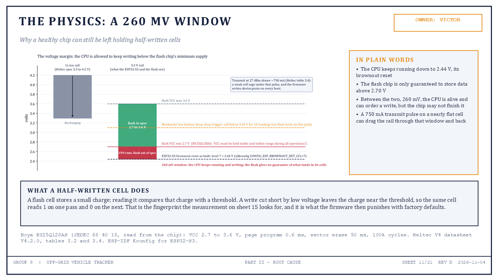
A voltage diagram: the lithium cell on the left, the 3.3 V rail on the right with the flash chip's specified range in green, the brownout reset level, and the 260 mV band between them in red. Plain-words card, and a card on what a half-written cell does.
Two chips share one supply line. The CPU keeps running down to 2.44 V, which is where its brownout detector resets it (ESP-IDF level 7, as the Arduino core is built). The flash chip, a Boya BY25Q128AS identified by its JEDEC ID 68 40 18 read from the part, is specified for 2.7 to 3.6 V, and its datasheet says VCC must be held in range during all operations. Between 2.44 and 2.70 V, 260 mV, the CPU is alive and can order a write, but the chip makes no promise about what lands in its cells.
How the rail gets there: a LoRa transmit at 27 dBm draws about 750 mA (Heltec datasheet table 3.4). On a nearly flat cell the regulator cannot hold the rail through that pulse; it dips and recovers in milliseconds. A page program takes 0.6 ms and a sector erase 50 ms, so a write in progress during the dip completes under an out-of-spec supply, and the CPU never resets because 2.44 V was never reached. The 3.10 V low-battery deep-sleep trigger protects a slow, clean discharge; it does not protect against these fast dips.
What a half-written cell is: a flash cell stores a small charge, and reading it compares that charge against a threshold. A write cut short leaves the charge near the threshold, so the same cell reads 1 on one pass and 0 on the next. It is not damage; the cell was never finished. That is the fingerprint the measurement on sheet 15 looks for, and the firmware then turns it into a factory reset.
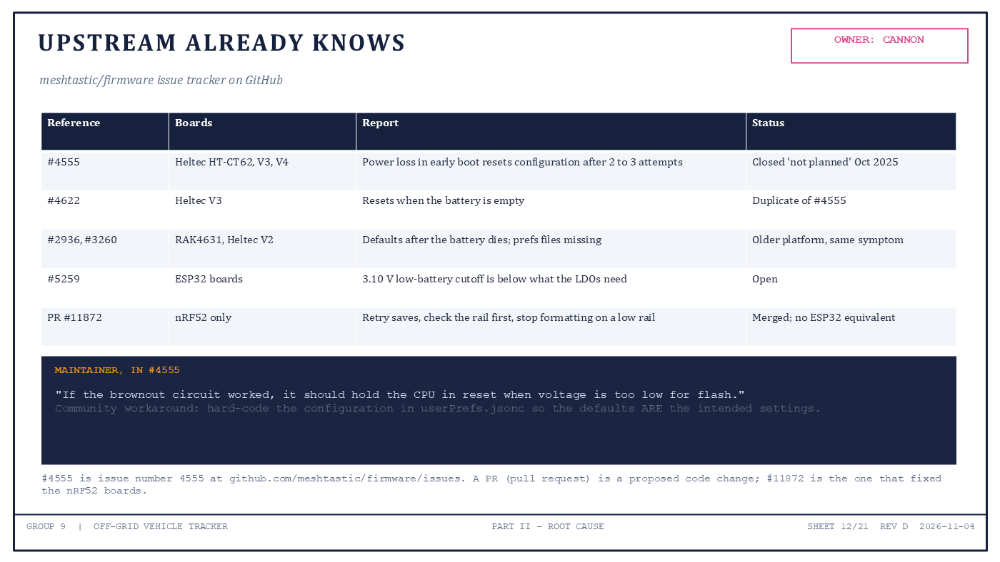
Five references from the Meshtastic firmware issue tracker on GitHub, a maintainer's quote, and a footnote explaining the "#" numbers.
"#4555" is issue number 4555 at github.com/meshtastic/firmware/issues: a public report, with the maintainers' replies. It describes power loss in early boot resetting the configuration on Heltec boards after two or three attempts, and was closed "not planned" in October 2025. #4622 is the same thing reported as "resets when the battery is empty". #2936 and #3260 are older reports on other boards. #5259 argues the 3.10 V low-battery cutoff is below what the regulators need. A PR (pull request) is a proposed code change; PR #11872, merged in 2026, added retries, a rail check before saving, and a stop on formatting under a low rail, but only for the nRF52 family. There is no ESP32 equivalent. The maintainer's sentence is our reading in their words: if the brownout circuit worked, it should hold the CPU in reset when the voltage is too low for flash. The community workaround on the last line, compiling the configuration in as the defaults, is what became our fix 1.
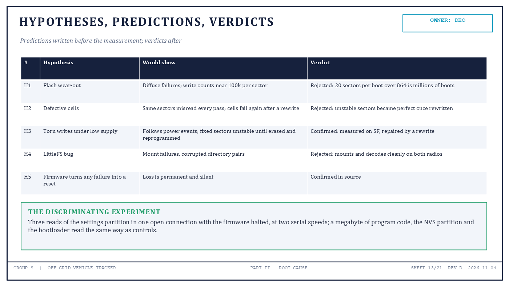
Five hypotheses, what each would show in the data, and the verdict after measurement.
The discipline of this sheet is that the predictions were written before the measurement. H1 wear-out predicts diffuse failures and write counts near 100,000 per sector; the firmware touches about 20 sectors per boot over 864, so reaching the endurance limit would take millions of boots. Rejected. H2 defective cells and H3 torn writes under low supply both predict the same fixed set of unstable sectors; only the erase-and-reprogram test separates them, because defective cells fail again after a rewrite and torn cells do not. Rewritten sectors became perfect, so H2 is rejected and H3 confirmed. H4 LittleFS bug predicts mount failures or corrupted directory pairs; the image mounts and every file decodes on both radios. Rejected. H5, that the firmware turns any failure into a permanent reset, is confirmed in source (sheet 10). The bottom card is the discriminating experiment, detailed on the next sheet.
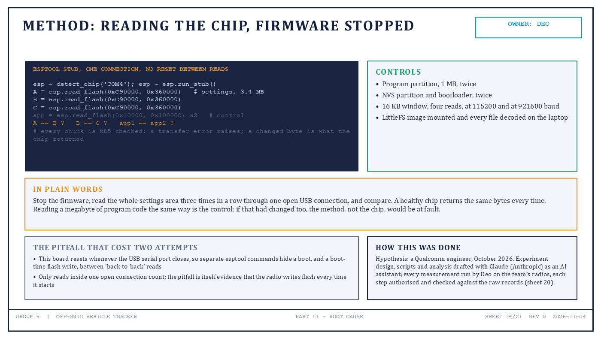
The esptool procedure in a code box, the controls, a plain-words card, the pitfall, and the attribution card.
esptool loads a small stub program into the chip's RAM and takes over; the Meshtastic firmware is not running. Inside one open connection the settings partition (0xC90000, 3.4 MB) is read three times and a megabyte of program code twice. Each chunk is MD5-verified by the stub, so a transfer error raises an exception rather than producing a wrong byte; a byte that differs between reads is what the chip returned. The controls are the point: the program partition, the NVS partition and the bootloader read identically every time, and a 16 KB window read four times at 115200 and at 921600 baud gave the same differences. If the method were at fault, the controls would have changed too.
The pitfall cost two attempts: this board resets whenever the USB serial port closes, so running three separate esptool commands silently inserts a boot, and a boot-time flash write, between "back-to-back" reads. Only reads inside one open connection count. The pitfall is itself evidence that the radio writes flash every time it starts. The LittleFS image was also mounted on the laptop and every file decoded, which proved the configuration in flash on measurement day was correct.
Attribution, to be said plainly if asked: the hypothesis came from a Qualcomm engineer; the experiment design, the scripts and the analysis were drafted with Claude (Anthropic) as an AI assistant; Deo ran every measurement on the team's radios, authorised each erase or write, and checked each result against the raw records; the scripts and records are in the repository so the measurement can be repeated in four minutes without the AI.
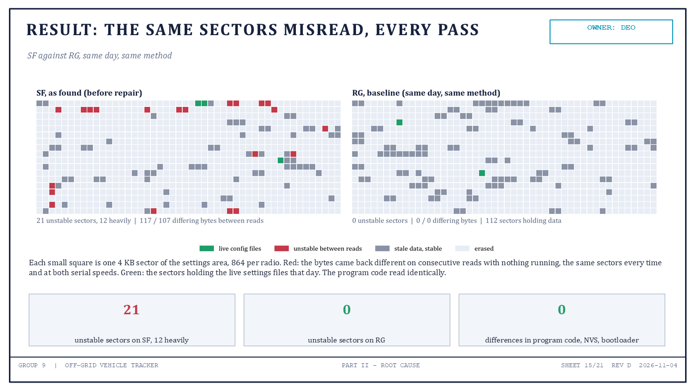
Sector maps of SF (as found) and RG (same day, same method), a plain reading of the map, and three numbers.
Each small square is one 4 KB sector; the settings area has 864. Red sectors returned different bytes on consecutive reads with nothing running: the same sectors every time, at both serial speeds. Green sectors held the live settings files that day (on SF: 25, 26 and 470), which were clean, and that is why SF was still working when measured; LittleFS wear-levelling would eventually have moved a live file onto a red sector. Grey is stale data that read stably; pale is erased. SF: 21 unstable sectors, 12 of them heavily (30, 31, 35, 36, 51, 55, 56, 57, 65, 70, 71, 85), 117 and 107 differing bytes between consecutive reads, 118 bits flipped in both directions, none inside erased areas. RG: zero. Program code, NVS and bootloader: zero differences on both radios.
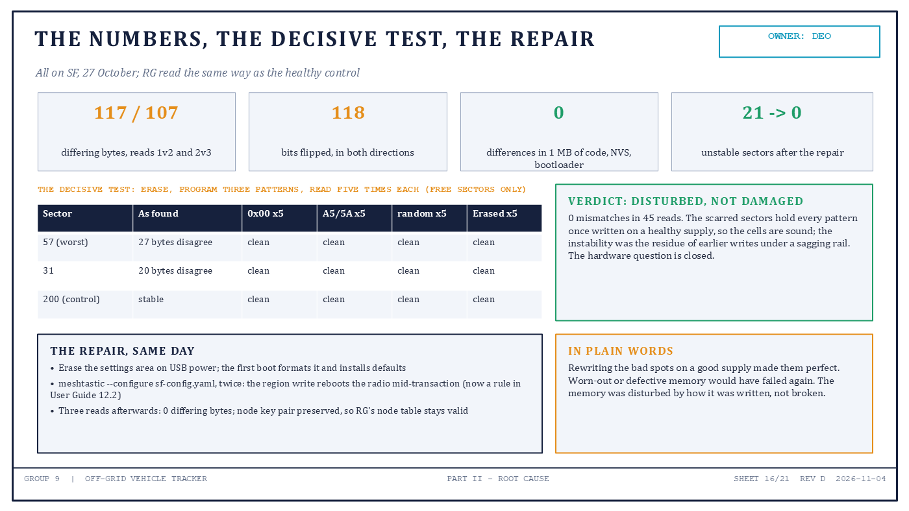
Four numbers, the decisive erase-and-reprogram test as a table, its verdict, the repair steps, and the plain-words reading.
Numbers. Fixed sectors, both bit directions, independent of serial speed, code partition stable: that is the fingerprint of cells whose stored charge sits at the read threshold. Not a serial artifact (chunks are verified), not wear (the pattern would be diffuse), not a file-system bug (the image mounts and decodes).
Decisive test (27 October, with authorisation). Sectors 57 and 31, the worst as found (27 and 20 disagreeing bytes), were free in LittleFS, so nothing was lost. Each was erased, then programmed with all zeros, with alternating 0xA5/0x5A, and with a random page, and read five times after each pattern and after a final erase; sector 200, stable as found, was the control. Zero mismatches in 45 reads. Cells that were worn or defective would have failed again; these held every pattern once written under a healthy supply. H2 falls, H3 stands: the silicon is sound and the instability was the residue of earlier writes completed with the supply out of range.
Repair (same day, thirty minutes). Erase the settings partition on USB power; the first boot reports "Failed to initialize LittleFS", formats, and installs defaults; apply the configuration snapshot with --configure twice, because the region write reboots the radio mid-transaction and the first pass loses owner, role, channel and cadence (now a rule in User Guide 12.2); read back, reset, read back again; three reads of the partition: zero differing bytes. The node key pair is carried in the snapshot, so RG's node table stayed valid.
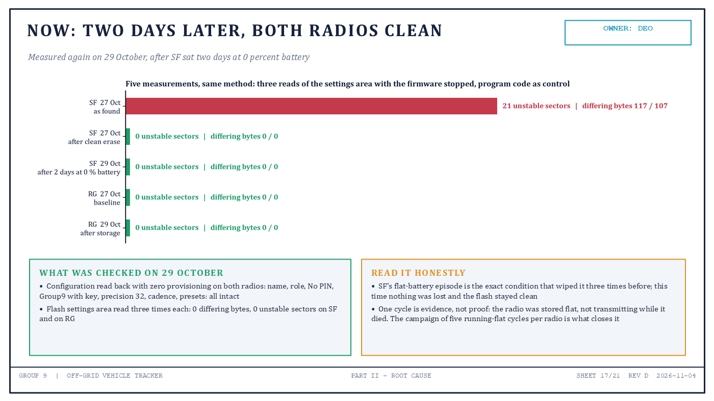
All five flash measurements on one chart, what was checked on 29 October, and an honest reading of what one cycle proves.
After the 28 October acceptance both radios were unplugged; SF sat two days at zero percent battery, the exact condition that wiped it three times before. On 29 October both were read back with zero provisioning: name, role, No PIN, Group9 with the key, precision 32, cadence, telemetry, 21 presets, all intact; SF reconnected at 18 percent and 3.40 V. The flash was then read three times each: zero differing bytes, zero unstable sectors on both (RG still holds 115 sectors of old data from before, all of it stable). This counts as cycle 1 of the flat-battery campaign for SF.
The honest limit: SF was stored flat, not transmitting while it died, so the dangerous write of sheet 11 may simply not have happened this time. Fix 1 makes a revert harmless; it does not remove the cause. The five running-flat cycles per radio, radio on and transmitting until it dies, with the flash map read after each, are what separate "the cause did not fire" from "the cause cannot fire".
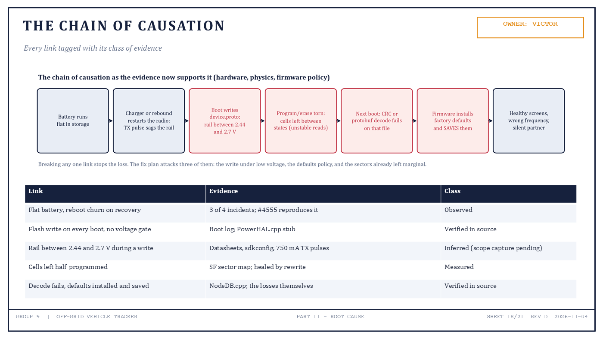
The five links from a flat battery to lost settings, each tagged with the class of evidence behind it: observed, verified in source, inferred, measured.
Read it left to right. (1) The battery goes flat and on recovery the radio boots and reboots: observed in three of four incidents and reproduced in upstream issue 4555. (2) Every boot writes a settings file with no voltage check: verified in the boot log and in PowerHAL.cpp. (3) The rail sits between 2.44 and 2.7 V during a write: inferred from the datasheets, the brownout configuration and the 750 mA transmit pulses; this is the one link not yet measured, and the oscilloscope capture is what closes it. (4) Cells are left half-programmed: measured on SF and healed by a rewrite. (5) A file fails to decode and the firmware installs and saves factory defaults: verified in NodeDB.cpp and in the losses themselves. Tagging the evidence class is what makes the argument defensible: one link is inferred and we say so.
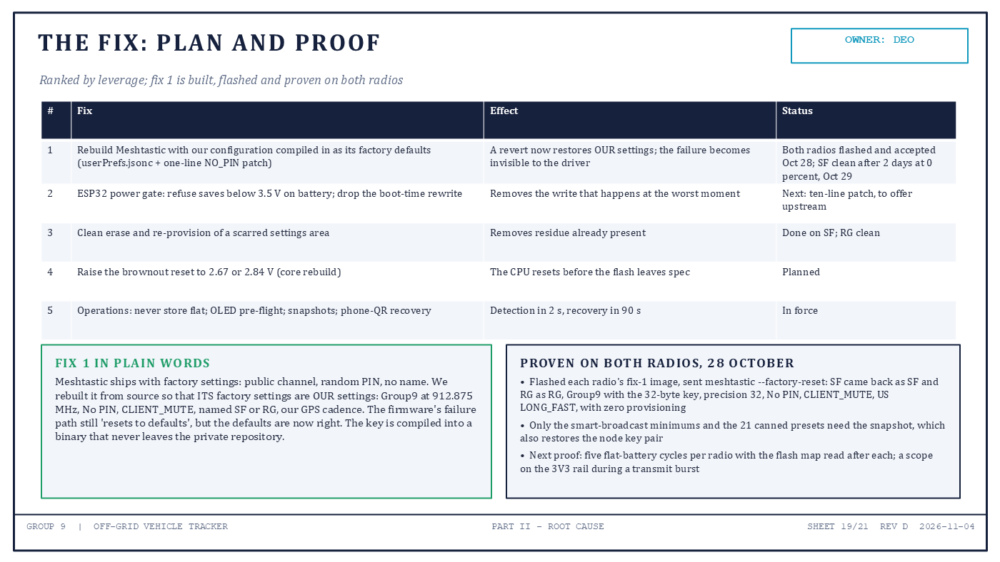
Five fixes ranked by leverage with status, fix 1 in plain words, and its proof on both radios.
Fix 1, done: Meshtastic 2.7.26 rebuilt from source with a userPrefs.jsonc that names the channel, key, precision, region, preset, owner names, role and cadence as the compiled-in factory defaults, plus a one-line patch so the default Bluetooth mode is No PIN. The firmware's failure path still "resets to defaults", but the defaults are now right. The channel key is compiled into the binary, so the images and the jsonc files never leave the private repository. Acceptance on 28 October: flash, send --factory-reset, read back with zero provisioning; SF came back as SF and RG as RG on Group9 at 912.875 with the key, precision 32, No PIN, CLIENT_MUTE, US LONG_FAST. Two things the defaults cannot carry, the smart-broadcast minimums and the 21 presets, come from the snapshot, which also restores the original key pair (a factory reset regenerates it). Fix 2, next: an ESP32 power gate that refuses saves below 3.5 V on battery and drops the boot-time rewrite; a ten-line patch to offer upstream. Fix 3, done on SF: the clean erase. Fix 4, planned: raise the brownout reset. Fix 5, in force: operations.
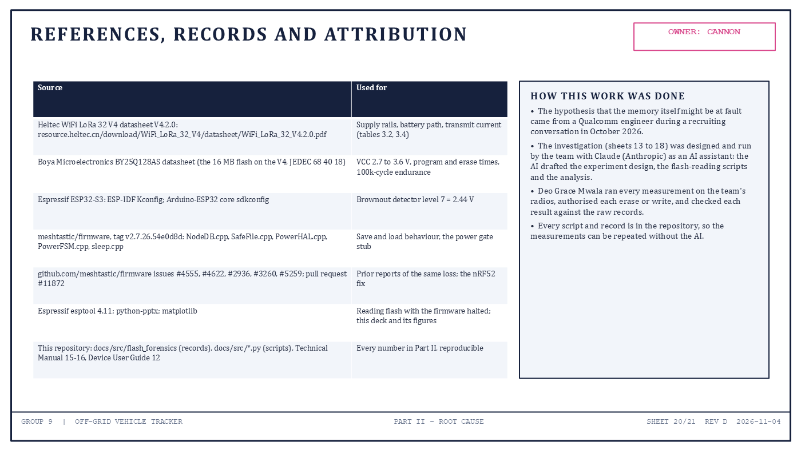
Every source used in Part II and what it was used for, and the statement of how the work was done.
The Heltec WiFi LoRa 32 V4 datasheet V4.2.0 gave the supply rails, the battery path and the transmit current (tables 3.2 and 3.4). The Boya BY25Q128AS datasheet gave the flash's 2.7 to 3.6 V range, program and erase times and endurance; the part was identified from its JEDEC ID read off the chip. ESP-IDF Kconfig and the Arduino core's sdkconfig gave the brownout level. The Meshtastic firmware at tag v2.7.26.54e0d8d gave the save and load behaviour. The GitHub issues gave the prior reports. esptool 4.11 read the flash; python-pptx and matplotlib built the deck. Every number in Part II is reproducible from docs/src/flash_forensics and the scripts in docs/src. The attribution card says who supplied what: hypothesis, a Qualcomm engineer; experiment design, scripts and analysis, Claude as an AI assistant under the team's direction; hardware, authorisation and checking, the team; reproducibility, the repository.
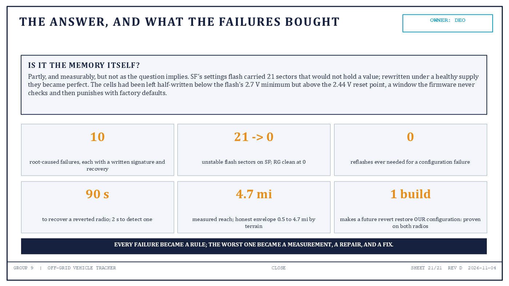
The answer to the question in one paragraph, six numbers, and the closing line.
Is it the memory itself? Partly, and measurably, but not as the question implies. SF's settings flash carried 21 sectors that would not hold a value; rewritten under a healthy supply they became perfect. The cells had been left half-written below the flash's 2.7 V minimum but above the 2.44 V reset point, a window the firmware never checks and then punishes with factory defaults. The six numbers: ten root-caused failures, 21 to 0 unstable sectors on SF with RG clean, zero reflashes ever needed for a configuration failure, 90 s to recover a reverted radio and 2 s to detect one, 4.7 mi measured reach, and one build that makes a future revert restore our configuration, proven on both radios. Close on the bar, then the ask: approve the flat-battery campaign before the next field test.